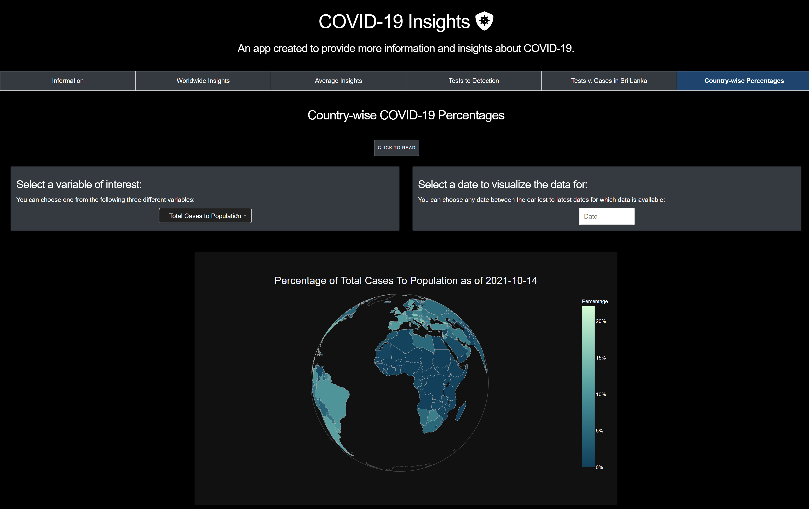

COVID-19 Insights
A live, filterable COVID tracker built when the data itself was still changing daily.

The Problem
Built as part of my Higher National Diploma coursework, during a period when COVID-19 data was being reported inconsistently across countries and changing fast, the goal was to give users a genuinely interactive tool to compare countries and track testing rigour over time.
The Approach
A six-tab Python application (Plotly, version-controlled in Git, deployed on Heroku), built around interactivity: pick any available date or metric and get live visualisations for that exact moment. The tabs were centered around coursework requirements, and include Information, Worldwide Insights, Average Insights, a Tests to Detection lens, a Sri Lanka-specific Tests v. Cases tab that localises the global dataset to a national context, and a Country-wise Percentages view.
The Outcome
The application successfully provided users with a comprehensive and interactive way to explore COVID-19 data across different countries and time periods. The six-tab interface allowed for various analyses, from global insights to country-specific views, making it a versatile tool for understanding the pandemic's impact. The project was selected for the national Sri Lanka Skills Expo 2023 exhibition, giving it real-world recognition beyond the coursework grade itself.